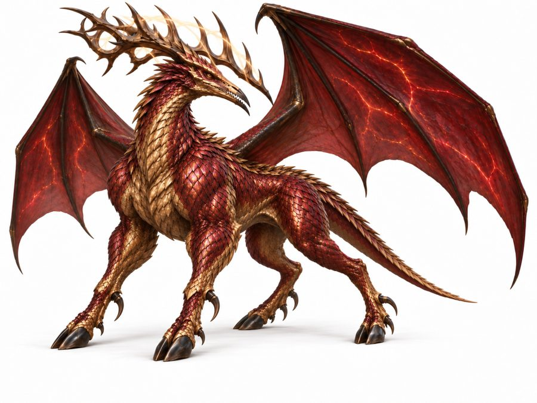

Sobravrek
The shadow-gilded wyrm. A legendary winged, antlered creature tied to the crystal desert and to the season of storms.
- Group
- Legendary
- Tags
- legendary flying TeDrona
- Body
- A sleek, four-legged, deer-or-big-cat torso covered in diamond-hard scales that shift between dark crimson and metallic gold. Canon
- Head
- An elongated reptilian skull with swept-back antlers and a tooth-filled beak that can snap iron. Canon
- Wings
- Pterosaur-scale, with dark blood-red membranes veined with faint bioluminescent light. Canon
- Limbs
- Split hooves backed by retractable, raptor-like talons. Canon
- Flight
- Explosive, deafening wingbeats, with local storms and arcing light between the antlers. A visible performance, not a quiet one. Canon
Eggs and age
- Eggs hatch only during Qoruvrak, and mating happens in the same window. Canon
- Some seasons give a clutch and some give none, depending on whether adults happened to be near each other. This keeps the population small without any outside check. Canon
- It does not age steadily. It steps forward in maturity once per Qoruvrak cycle. Canon
Settling
Because its birth conditions are so unstable, a Sobravrek adapts to change quickly and permanently. Once bonded, a rider can take it to any climate and it settles. Canon
The bond
- It reads intent aimed at itself: the rider’s posture, dabit exposure and heart-stone resonance register as predatory or respectful toward the animal in that moment. Canon
- A good person approaching with bad intent toward the animal, such as a hunter, is refused all the same. It is not a judge of character in general. Canon
- If a bonded Sobravrek has young, the rider’s trust may partly pass to them. It is inherited trust, not inherited ownership. Canon
- Only two of the eight princes are bonded to one today, and one or two riders outside the royal family. Canon
In the sky
The Sobravrek is a constellation in the northwest, bright in cobalt and dim otherwise. Its two antler tips are called the Rivals. Canon
Notes
Not a working mount, and closer in weight to the Xatholun than to any of the cavalry animals. The revised image is accepted as final.
